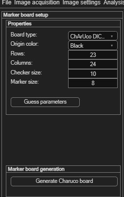
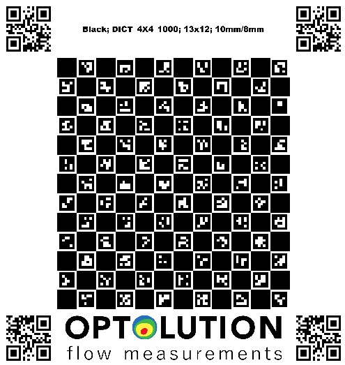
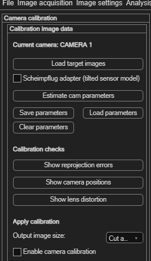
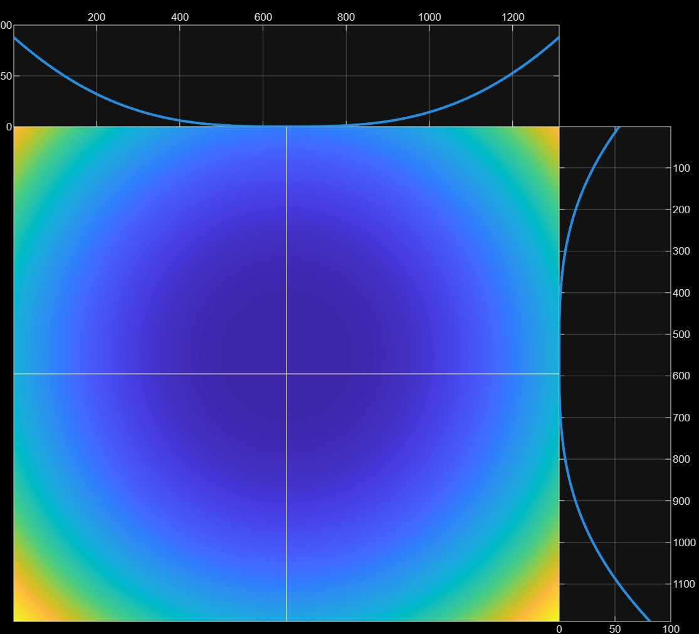
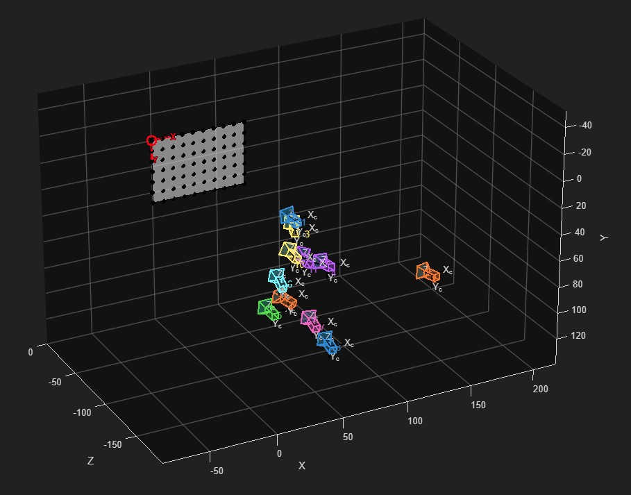
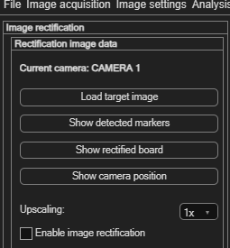
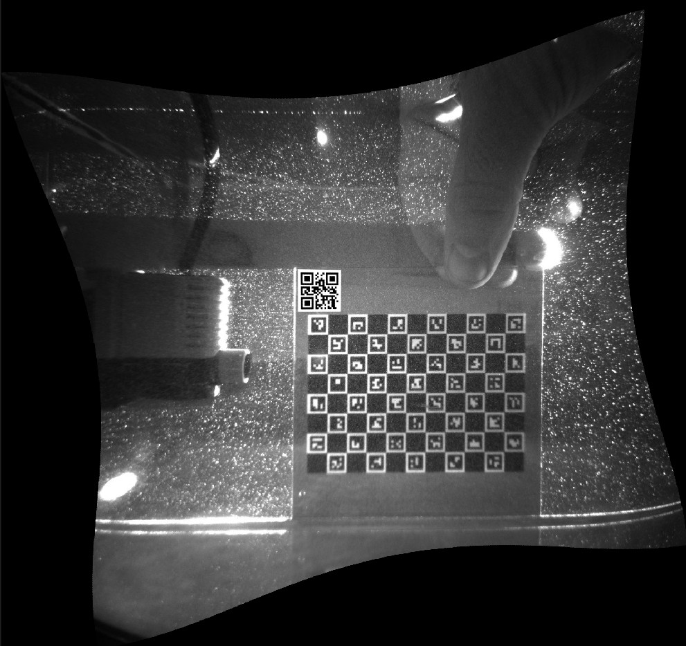

Camera calibration & rectification
These tools correct problems introduced by the camera and lens — distortion and misalignment — before the PIV analysis runs. They're different from Spatial calibration (px → mm), which just converts pixel units to physical units after the fact.
| Tool | Corrects |
|---|---|
| Camera calibration (undistortion) | Lens distortion (barrel/pincushion effects) using a photographed marker board. |
| Image rectification | Misalignment between the camera's image plane and your target coordinate system / laser sheet. |
Setting up a marker board
Both calibration and rectification are done by photographing a printed ChArUco board (a checkerboard combined with ArUco markers). Configure it via Image settings → Camera calibration → Setup / define / generate marker board:
| Field | Meaning |
|---|---|
| Board type | Currently only ChArUco DICT_4X4_1000. |
| Origin color | Color of the top-left checker (Black/White) — must match your printed board. |
| Rows / Columns | Checkerboard dimensions (default 23 × 24). |
| Checker size / Marker size | Physical size of the checkers and the ArUco markers printed on them. |
Click Guess parameters to have PIVlab estimate these from a photo, or Generate Charuco board to produce a printable board matching your settings.


Camera calibration (lens undistortion)
Open via Image settings → Camera calibration → Camera calibration (undistortion) → Camera 1.

- Click Load target images and select several photos of your marker board from different angles/positions.
- If your camera uses a Scheimpflug adapter (tilted sensor), enable Scheimpflug adapter (tilted sensor model) first.
- Click Estimate cam parameters to detect the markers and compute the lens model.
- Save parameters to reuse this calibration later, or Load parameters to bring back a previous one.
Checking the result
| Button | Shows |
|---|---|
| Show reprojection errors | How well the model fits — should be below 1 pixel for a valid calibration. |
| Show camera positions | Where the camera was relative to the board in each calibration image. |
| Show lens distortion | A visualization of the detected lens distortion. |


Applying it
Set Output image size — undistorting an image curves its straight edges, so you choose how to handle the resulting black borders: Cut away black borders, keep the Same size as input image, or Include black borders in full. Then tick Enable camera calibration to actually apply the undistortion to your images.
Image rectification
Open via Image settings → Camera calibration → Image rectification / alignment → Camera 1 (you need images loaded first). Rectification aligns the image with your target coordinate system by photographing the marker board positioned inside the laser sheet, aligned with the plane you actually want to measure.

- Click Load target image and select that photo.
- Use Show detected markers, Show rectified board and Show camera position to check the detection before committing.
- Set Upscaling (1× or 2×) — upscaling reduces artifacts from image interpolation during rectification, at the cost of slower analysis.
- Tick Enable image rectification to apply it.
